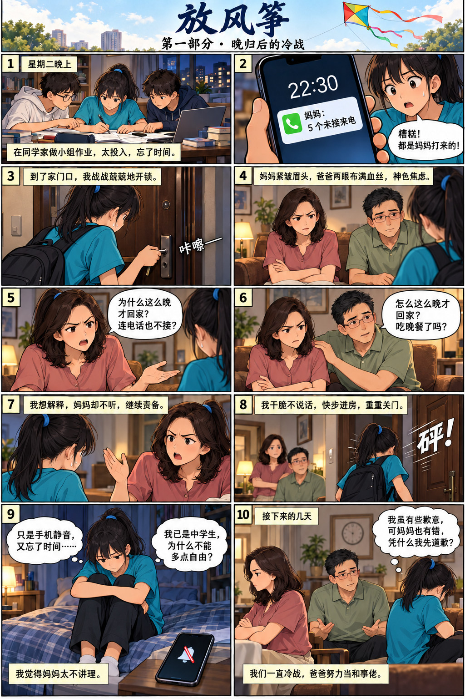
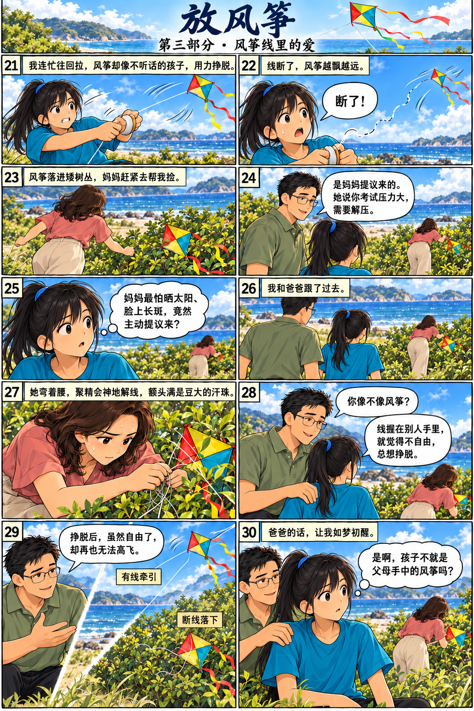

课文主页 / 漫画回读
放风筝





第1段
星期二晚上，我在同学家做小组作业，因为太投入，没有注意时间。十点半左右，我才发现手机里竟然有五个未接来电！糟糕，都是妈妈打来的！
第2段
到了家门口，我战战兢兢地插入钥匙，“咔嚓”一声，开了。一踏入屋里，我就看到妈妈和爸爸坐在沙发上。妈妈紧皱眉头，表情严肃；爸爸则两眼布满血丝，神色焦虑。妈妈一见到我，就一脸不悦地责问我：“你为什么这么晚才回家，连电话也不接？”爸爸连忙拍拍妈妈安抚她，关心地问我：“怎么这么晚才回家？吃晚餐了吗？”
第3段
我想解释，妈妈却不听，继续责备我。我干脆一句话也不说，快步走进房间，重重地把门关上。我感到很委屈。我已经是中学生了，为什么不能给我多一点儿自由？更何况我是因为手机设成静音模式，又忘了看时间才晚回家的。妈妈根本不听我解释，真是太不讲理了！
第4段
接下来的几天，我和妈妈一直冷战。爸爸努力当和事佬，希望我们和好。虽然我心里有一丝歉意，但我可不想先举白旗。妈妈也有错，凭什么要我先道歉？
第5段
星期天早上，爸爸温和地对我说：“我们今天去放风筝吧！”
第6段
我觉得在家挺无聊的，于是就答应了。
第7段
“妈妈也一起去哦。”
第8段
“啊……”我心里有些别扭。
第9段
爸爸不等我回应，就赶紧回房叫妈妈准备出门。
第10段
来到海边，我心里五味杂陈。妈妈也来了，我该不该和她说话？她帮我整理好风筝，把它交给我，自己则拉着风筝线走到不远处。我举起风筝向前跑，手一松，风筝便摇摇晃晃地飞上了天空。
第11段
妈妈微笑着将风筝线放到我手里，让我来放，我也尴尬地对她笑了笑。突然一阵风吹来，风筝开始在空中上下摇摆。我连忙把风筝线往回拉，想不到风筝却像个不听话的孩子，用力挣脱。线断了，风筝越飘越远，最后落在矮树丛中。
第12段
妈妈赶紧走向树丛帮我捡风筝。爸爸慈爱地看着我说：“是妈妈提议出来放风筝的。她说你考试压力大，需要解压。”我有点儿惊讶，妈妈最不喜欢晒太阳，担心脸上长斑，怎么会主动说要放风筝？
第13段
我和爸爸跟了过去。妈妈弯着腰，聚精会神地解着缠绕在树丛中的风筝线，额头上都是豆大的汗珠。爸爸搂着我的肩膀说：“你想想，自己像不像风筝？风筝线握在他人手里，风筝觉得不自由，总是想挣脱；挣脱后，它虽然有了自由，却再也无法高飞了！”
第14段
爸爸的话让我如梦初醒。是啊，孩子不就是父母手中的风筝吗？
本文改编自羊牧的《放风筝》。